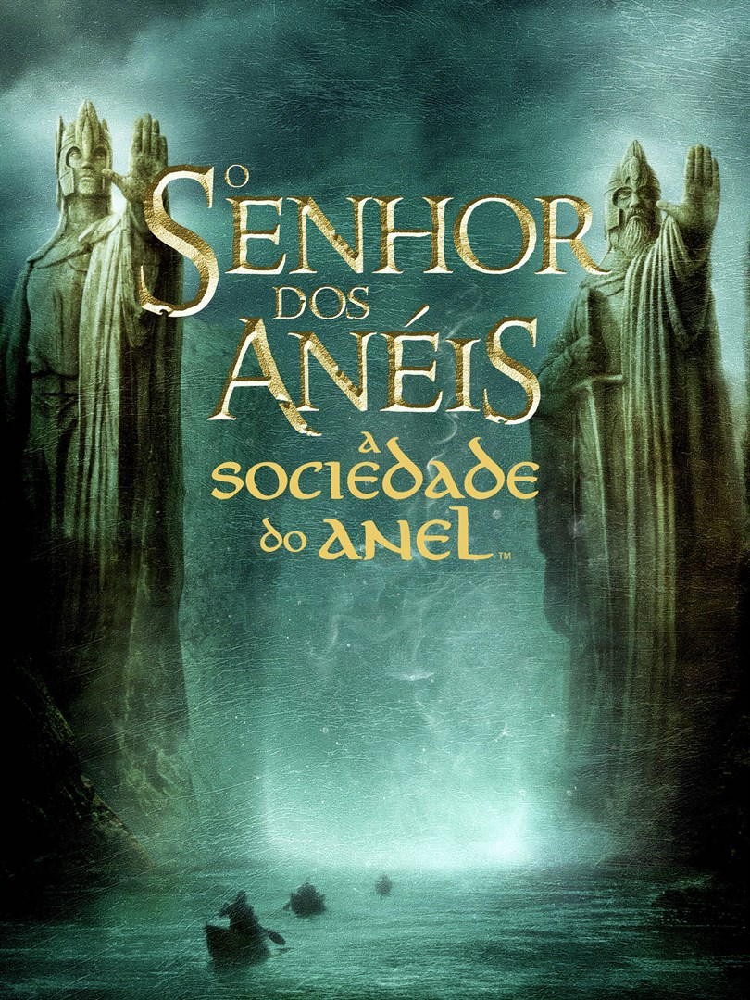

Senhor dos Anéis - A Sociedade do Anel
Em uma terra fantástica e única, um hobbit recebe de presente de seu tio um anel mágico e maligno que precisa ser destruído antes que caia nas mãos do mal.
Para isso, o hobbit Frodo tem um caminho árduo pela frente, onde encontra perigo, medo e seres bizarros.
Ao seu lado para o cumprimento desta jornada, ele aos poucos pode contar com outros hobbits, um elfo, um anão, dois humanos e um mago, totalizando nove seres que formam a Sociedade do Anel.
Diretor: PETER JACKSON
Quantidade Oscar:12